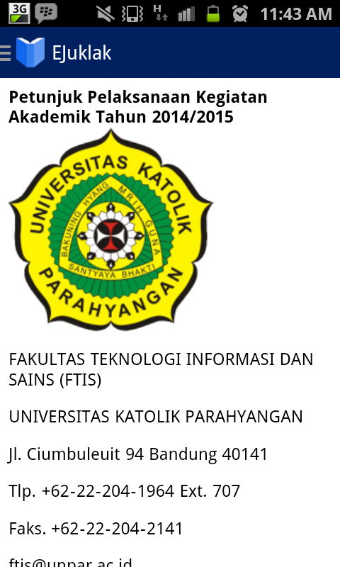
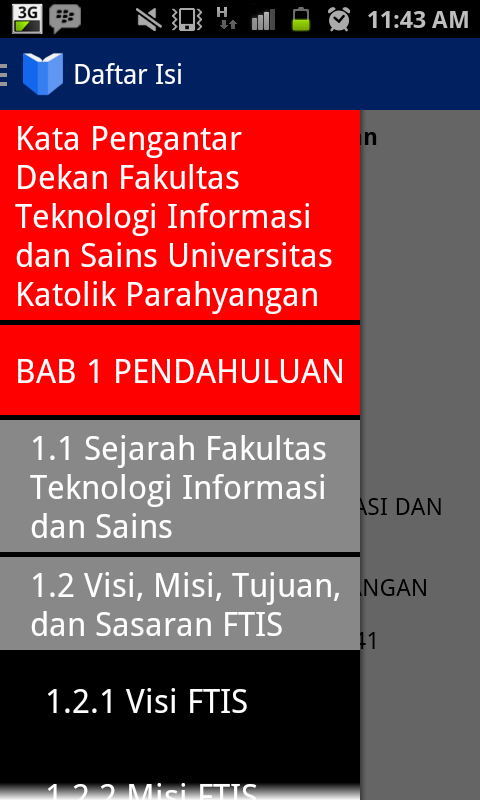
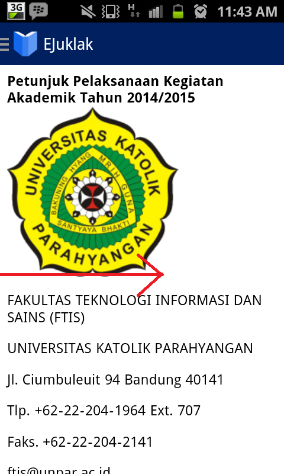
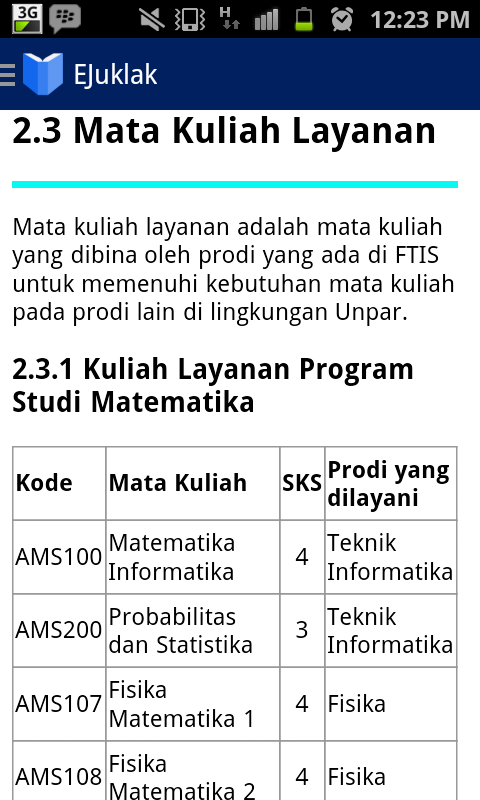
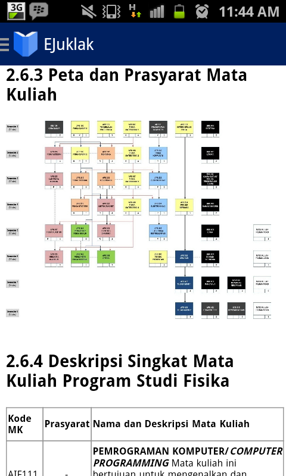
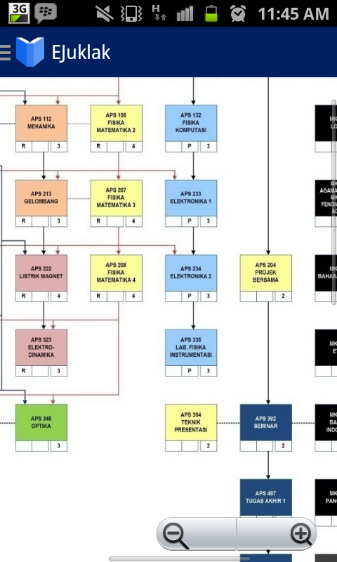

Help
Cara melakukan navigasi di eJuklak
- Saat menjalankan aplikasi, gambar di bawah ini adalah halaman pertama yang akan dilihat oleh pengguna. Ini adalah home page.

- Untuk memilih konten eJuklak, tekan tombol dropdown di layar terletak pada kiri atas layar pada icon EJuklak, lalu pilih bab dan subbab yang Anda inginkan.

- Selain menekan tombol ikon dropdown di kiri atas, pengguna juga bisa dapat menu navigasi menge-slide layar dari ujung kiri ke kanan.

- Setelah memilih bab atau subbab tertentu, aplikasi akan langsung menampilkan bab dan subbab yang dipilih.

Cara melihat dan menge-zoom gambar
- Untuk menge-zoom gambar, klik salah satu gambar. Gambar yang bisa di-zoom hanya gambar peta mata kuliah dan lampiran.

- Setelah menge-klik, pengguna bisa melakukan zoom-in dan zoom-out terhadap gambar.

- Jika pengguna ingin kembali ke halaman utama EJuklak, tekan tombol 'back' pada handphone.